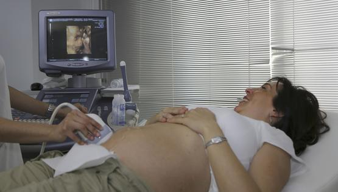

2018-08-03 17:30 果壳网
数据显示，只有4%的孕妇是在预产期那一天生下宝宝的。一方面是因为胎儿在母亲体内的生长因人而异，另一方面还因为现代医学不能够准确地预测预产期。
医学技术发展到今天，早产仍是导致婴儿死亡的主要原因。所以计算出准确的胎龄意义重大。通过胎龄，我们可以判断胎儿的发育情况，预测孕妇的预产期。以便医生在必要的时候给予特殊护理，保证孕妇和胎儿的安全，防止早产。
计算出准确的预产期是产科学一直在追求的目标。为了实现这个目标，研究者们借助了尖端的基因组学技术。斯坦福大学的一个团队尝试用血液检测来计算胎龄，并将结果发在了《科学》杂志上。虽然这还只是一个初步的研究，但是他们相信利用这个技术，总有一天医生能够计算出精确的预产期。
现在通用的胎龄计算方法有两种：
1.末次月经法：用末次月经第一天的日期推算孕妇排卵和受孕的时间。但是很多女性月经周期不规律，还有一部分会忘记末次月经的具体时间；再加上怀孕后的第一个月，可能会发生阴道出血，孕妇会因此而弄错时间。所以用这个方法测得的结果很不精确。
2.B超检查：医生用B超探测孕妇的腹部，测得胎儿的大小，估算出胎龄，并推算出预产期。但是这种方法在怀孕初期比较准确，到了后期精确性就会下降。
医生们会综合考虑以上这两种方法测得的结果，计算出胎龄和孕妇的预产期。但是如果在孕早期没有做过B超，或者没有条件用超声来测胎龄，就只能选择第一种方法：通过孕妇的末次月经日期来判断胎儿的年龄。
这样的话，可能会导致非常严重的后果。如果胎龄测得不准确，医生在不恰当的时候进行引产或者剖腹产，会危及母亲和胎儿生命。
这就是为什么妈妈在见到宝宝平安降临到世上之前，会有一段压力爆棚的时期了。
研究人员在《科学》杂志上发布的只是一个初步的研究结果，想要在医院或者诊所见到这个技术还需要大量的临床试验来证明，但是大多数我采访的妇产科研究人员谈到这个技术的时候，都非常激动，对它满怀期待。
为了探究血液测试能否用来计算胎儿的年龄以及能否预测孕妇早产的风险。斯坦福大学的科学家在一群孕妇身上做了几组先导研究。
研究人员发现无细胞RNA转录产物会留下胎儿生长发育的线索，可以揭示孕妇孕程的进展，所以将其列为血液检测中的生物标志物。
为什么无细胞RNA转录产物会留下胎儿生长发育的线索呢？
因为基因决定着人的特征，而它的表达是通过DNA控制蛋白质的合成来实现的。由于DNA不能直接控制蛋白质的合成，所以就借助到了RNA。
基因先被转录成RNA，转录的RNA有一些被翻译为蛋白质进入细胞质，另一些则被分泌到细胞外进入血浆。分泌到血浆的RNA被称为无细胞RNA转录产物，也就是血液检测中所需的生物标记物。
分析丹麦31名孕妇的血液样本后，研究人员发现这些生物标志物与胎儿发育阶段有对应关系。
为了计算出准确的胎龄，研究人员利用无细胞RNA与胎儿发育阶段的对应关系，调整了血液检测。最终这个检测的准确率只有一半，但是研究人员发现一个很有意思的现象：随着孕妇孕期的进展，超声测得的胎龄准确性会下降。而血液检测则恰恰相反，胎龄越大，精确度越高。早产是造成新生儿死亡的主要原因，在日后的生活中，早产儿也会比足月儿更容易受到疾病的困扰。所以研究人员还想知道这个测试能否判断孕妇早产的风险。他们找了两组孕妇做试验，用血液标志物推算出的结果准确度为75%。
由于现在还没有能准确预测早产的办法，医生用这项技术可以判断孕妇早产的风险，帮助孕妇安全分娩。虽然结果不太完美，但是还是非常令人激动的。
无细胞RNA转录产物技术现在还没能广泛应到医院或者诊所，但当它来到我们身边的时候，即使是在一些医疗资源短缺、无法用超声来测胎龄的地方，也可以计算出准确的胎龄，保证孕妇和胎儿的安全。让我们拭目以待吧。